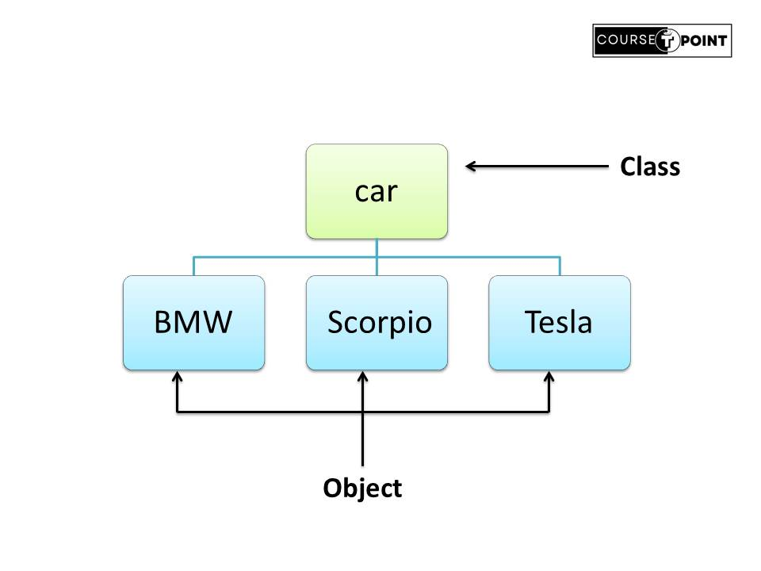
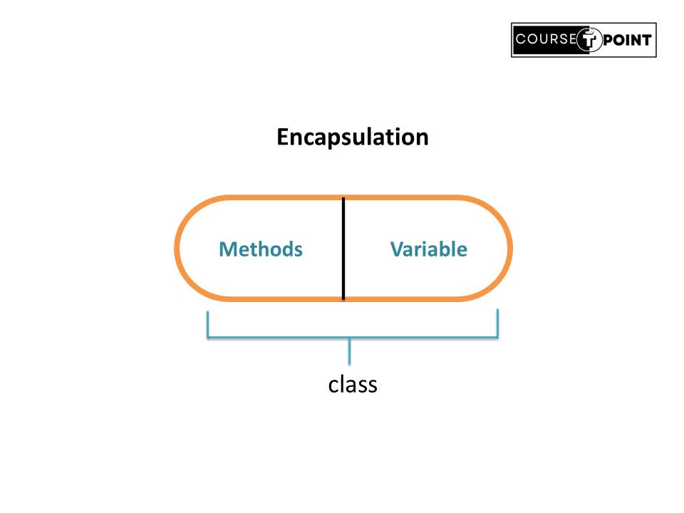
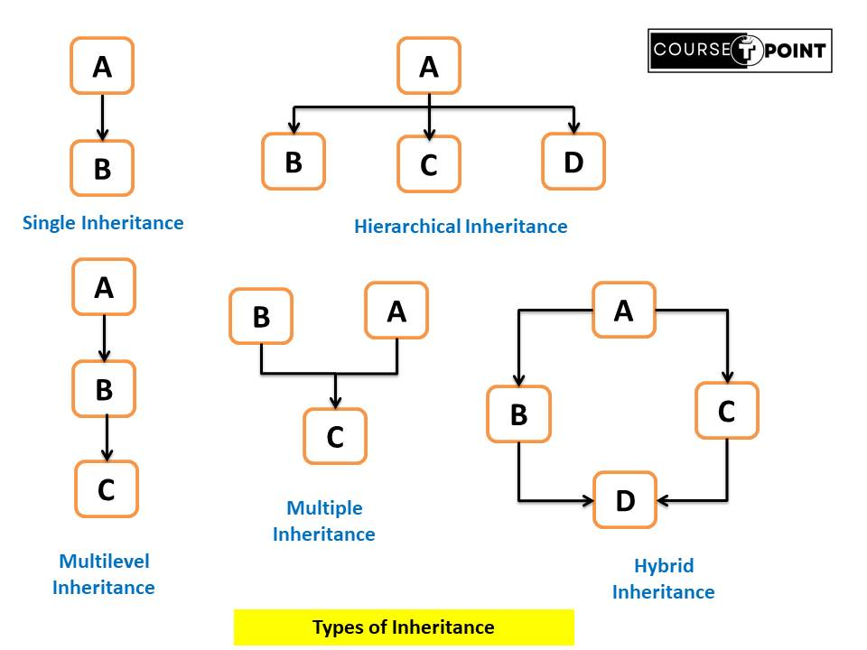
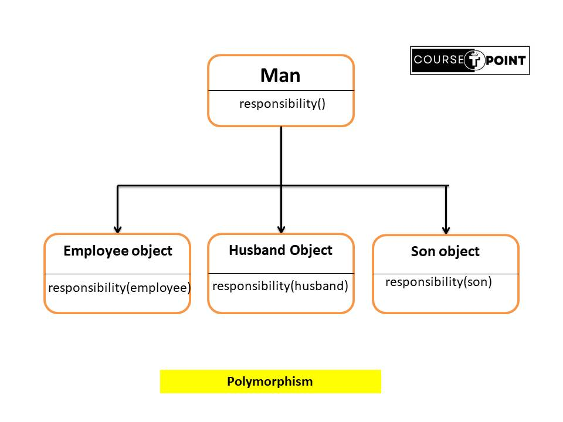

Object Oriented Programming Concepts
| Table Of Content | |
|---|---|
What is OOPs
In the Introduction we known Java is OOP what why java is used the concepts of OOP? In this Article
we are briefly understand the Concept OOPs.
Object Oriented Programming allows to decompose a problem into a number of entities called objects
and
then build data and function(methods in java) around these entities. Procedural programming is about
writing procedures or methods that perform operations on the data, while object-oriented programming
is
about creating objects that contain both data and methods.
Benefits
- OOP is easy and faster to execute.
- The principle of data hiding helps the programmer to build secure programs.
- OOP helps to keep the Java code DRY "Don't Repeat Yourself", means we can reuse the code when we use in previous program.
- Easy to maintain and debug.
- By the help of Oop it is easy to partition of complex project or large project based on Object.
Objects
Objects are basic runtime entities in an object-oriented system. These entities are
represent by person, table, place, age.
An objects are the instance of a class that are
created to
use attributes and methods of a class. Objects are real world Entities.
When we create an
object,
which is non-primitive datatype, It's always allocated on the heap memory.
Characteristics of Objects
- State: State represent the attributes of an Object. It shows the properties of an object.
- Behavior: Behavior of an object provide a functionality perform by the object.
- Identity: An object provide an unique Identity for an one object interact with other objects.
If we are declare an object we can use of new operator. The new operator dynamically allocates(allocates at run time) memory for an object and returns a reference to it.
Syntax:
class_name < obj > = new class_name();
Class
A Class is a set of Object or group of Object which shares common properties/characteristics. In simple words we define a class is a blue-print or prototype from which object are created. for example Car is a class while a particular car name BMW , Maruti suzuki, fort is an object.
Properties of Class
- Classes are not real world entities.
- Class not occupy memory.
- A class is a container that contains
- Data members
- Methods
- Construct
- Interface
- Nested classes
Class Declaration in Java
< access_modifier > class < class_name >{
field declaration;
methods declaration;
}
/*In the below program show the working of classes and objects in java.*/
class Rectangle{ // declaration of class
int length, width;
void getData(int length, int width){ //definition method
this.length=length;
this.width= width;
}
int display(){
return length*width;
}
}
class Area{
public static void main(String[] args){
Rectangle obj = new Rectangle(); //creating objects
int area;
obj.getData(5,7);
area = obj.display();
System.out.println("Area of Rectangle : " + area);
}
}
Output: Area of Rectangle : 35
Difference Between Class and Object
| Java Class | Java Object |
|---|---|
| Class is a container that containe data member and method. | Object is an instance of class. |
| No memory is allocated when we declare a class. | Memory is allocated when we create a object of the class. |
| Class is not real world Entity. | Where Object is a real world Entity. |
| when we declare a class we can use class keyword. | when we create a object we can use new keyword. |
| For Example : Car is a Class | BMW, Scorpio, Tesla are the instance of class(car). |
Abstraction
Data Abstraction is refers to the act of representing essential features without
including
the background detail. In simple we can say that data Abstraction is a property in which only
essential
detail are displayed to the user.
Consider a real life example a man driving a bike. The man
only
knows that give some raise will increase the speed of bike or applying brakes will stop the bike,
but he
does not know how on give raise, the speed of bike will increase and not known when he apply brake
the
bike will stop. He does not known about the internal mechanism of the bike.
In Java,
Abstraction
is achieved by interface and abstract classes. we can achieve 100% abstraction using interface.
Abhi abstract classes and method raha gya hai.
Encapsulation
The Wrapping up of data and methods into single unit(class) is known as Encapsulation. The data is not accessible by the outside world and only those methods, which are wrapped in the class can access it. These methods provide the interface between the object's data and program. Encapsulation makes it possible for objects to treated like a "black box", each performing a specific task without knowing any internal implementation.
Here's an example to illustrate data encapsulation in Java:
class Student {
// Private fields (attributes)
private String name;
// Public methods to access and modify the private fields (getters and setters)
// Getter for name
public String getName() {
return name;
}
// Setter for name
public void setName(String name) {
// Perform validation, if required
this.name = name;
}
}
class TestStudent {
public static void main(String[] args) {
// Create an object of Student class
Student student = new Student();
// Set student details using setter methods
student.setName("Rohit");
// Get and display student details using getter methods
System.out.println("Name : " + student.getName());
}
}
Output: Name : Rohit
- The fields 'name' are declared as private, meaning they cannot be accessed directly from outside the class.
- Public getter and setter methods are provided for each private field to access and modify their values.
- We can create 'student' object of the class Student.
- We set the student details using the setter methods.
- and display using getter method.
Advantages of Encapsulation
- Data-Hiding
- Code Reusability
- Increase Flexibility
- Enhanced Security
- Code Maintainability
Disadvantages of Encapsulation
- Increase Complexicity
- Difficult to understand
- Performance Overhead
Inheritance
Inheritance in java is important feature of Object Oriented Programming that allow one
class to used the feature of another class. Means feature of Base class Inherited by derived class
using
extends Keyword.
- Super class/ Parent class: The class whose features are inherited is known as a superclass.
- Sub class/ Child class: The class that inherits the other class is known as a subclass.
- Reusability: When we inherited the property from base class to derived class help to code Reusable.
class < subClassName > extends < superClassName >{
variables;
methods;
}
Here Program to illustrate the working of Inheritance.
// Base class declaration
class Parent{
String parName = "Base Class";
}
// Derived class inhert from base class
class Child extends Parent{
String childName = "Derived Class";
}
class Mains{
public static void main(String [] args){
Child c = new Child();
System.out.println("child name : " + c.childName);
System.out.println("parent name : " + c.parName);
}
}
Output:
child name : Derived Class
parent name : Base Class
Types of Inheritance
- Single Inheritance : A derived class inherits only one superclass. Above image single inheritance shows class B Inherits from Class A.
- Multilevel Inheritance : Maintain a chain when class C is inherits from B and class B inherits from class A.
- Multiple Inheritance(Using Interface) : One subclass is inherits from more than one superclass, but Java does not support multiple Inheritance it achieved by using the concept Inheritance.
- Hierarchical Inheritance : As the name suggest multiple subclasses are inherits from single superclass.
- Hybrid Inheritance : It is mix of different type of Inheritance. Since Java doesn’t support multiple inheritances with classes, hybrid inheritance involving multiple inheritance is also not possible with classes. But using Interface is possible.
Important Point to Remember about Inheritance
- Access Modifiers: Inheritance respects access modifiers. If a superclass member is declared as
private, it cannot be accessed directly by the subclass. However,protectedandpublicmembers can be accessed by the subclass. - Constructor Chaining: When a subclass is instantiated, the constructor of its superclass is
invoked
implicitly or explicitly using the
super()keyword. - Overriding: Subclasses can override superclass methods to provide a specific implementation
using
the
@Overridenotation.
Polymorphism
The word "polymorphism" is derived from Greek, where "poly" means many and "morph" means forms. Polymorphism refers to the ability of a single interface (method) to operate on different types of objects.
Polymorphism is another important feature of OOP. Is an Operation may exhibit different behavior in different instances. The behavior depends upon the types of data used in the operation. For Example, consider a man has different responsibity on front of different person and place like man is employee of his company, same man is husband for his wife and same man is son for his mother same man take different responsibity in different places. This is called Polymorphism.
Types of Polymorphism
- Method Overloading : Method Overloading is create methods that have same name, but
different parameter lists and different definitions. This is called method Overloading.
Method overloading in Java is also known as Compile-time Polymorphism, Static Polymorphism, or Early binding.
Method overloading is used when objects are required similar tasks but using different parameter list. - Method Overriding : Method Overriding is create method that have same name and same
parameter, method of subclass is inherits from the superclass. That means, we should override
the
method defined in the superclass. This is possible by defining same method in subclass.
Method overriding in Java is also known as Run-time Polymorphism, Dynamic Polymorphism, or Late binding.
Method overriding is used to change the definition of the superclass method.
class Addition{
int add(int a, int b){ // add method with two parameters.
return (a+b);
}
int add(int x, int y, int z){ // overload add method with three parameter.
return(x+y+z);
}
}
class Sum{
public static void main(String [] args){
Addition sum = new Addition();
System.out.println(sum.add(15,20));
System.out.println(sum.add(12,15,3));
}
}
Output: 35 30
//superclass parent
class Parent{
void display(){
System.out.println("Parent class");
}
}
// Subclass1 inheriting from Parent
class Child1 extends Parent{
@Override // override the display() method of parent class
void display(){
System.out.println("Child1 class");
}
}
// Subclass2 inheriting from Parent
class Child2 extends Parent{
@Override // override the display() method of parent class
void display(){
System.out.println("Child2 class");
}
}
class Overrides{
public static void main(String [] args){
Parent obj ; //create an object of parent class
obj= new Child1();
obj.display();
obj= new Child2();
obj.display();
}
}
Output:
Child1 class
Child2 class
Difference Between Method Overloading and Method Overriding
| Method Overloading | Method Overriding |
|---|---|
| Multiple methods in the same class with the same name but different parameters (signature). | A subclass provides a specific implementation of a method that is already defined in its superclass. |
| Inheritance is not Involved. | Inheritance is Involved. |
| Also called Static binding. | Also called Dynamic binding. |
| Same method name with different parameter lists. | Same method name with the '@Override' annotation in the subclass. |
| It is Compile-time polymorphism that call resolve by the compiler. | It is Run-time polymorphism that not call resolve by the compiler. |
| It is faster execution due to compile time polymorphism | It takes more time to execution due to run-time polymorphism |
Super keyword
In Java, the super keyword is a reference variable that is used to refer to the
immediate parent class object.
It is used to call superclass methods, and to access the
superclass
constructor.
You can use the super keyword to access the members (methods, variables, and
constructors) of the superclass from the subclass.
1. Invoking Parent Class Variable :
In the below program both the base class and derived class have a member height. We could access the height of the base class in derived class using super keyword.
// base class
class Parent{
int height = 46;
}
//derived class
class Child extends Parent{
int height = 30;
void display(){
// print height of base class (Parent)
System.out.println("Height : " + super.height);
}
}
class MainClass{
public static void main(String [] args){
Child obj = new Child();
obj.display();
}
}
Output:Height : 46
2. Invoking Parent Class Method:
In the below program, we have seen that if we only call method display() of child class then, the display() is invoked but with the use of the super keyword, display() of parent class could also be invoked.
// base class
class Parent{
void display(){
System.out.println("I'm Parent Class display() method");
}
}
//derived class
class Child extends Parent{
void display(){
// Calling the display method of the Parent class
super.display();
System.out.println("I'm Child Class display() method");
}
}
class MainClass{
public static void main(String [] args){
Child obj = new Child();
obj.display();
}
}
Output:
I'm Parent Class display() method
I'm Child Class display() method
3. Invoking Parent class using Constructor.
In the below program, we have called the superclass constructor using the keyword ‘super’ via subclass constructor.
// base class
class Person{
public Person(){
System.out.println("Default Constructor of Person class.");
}
}
//derived class
class Employee extends Person{
public Employee(){
// Calling the constructor of the Person class
super();
System.out.println("Default Constructor of Employee class.");
}
}
class MainClass{
public static void main(String [] args){
Employee obj = new Employee(); // constructor call
}
}
Output:
Default Constructor of Person class.
Default Constructor of Employee class.
This Keyword in Java
The this keyword refers to the current object in a method or constructor.
In Java, the this keyword is a reference variable that refers to the current object within an
instance
method or constructor. It can be used to access instance variables, instance methods, and
constructors
of the current object.
class Person{
String name;
int id;
// constructor
Person(String name, int id){
this.name =name;
this.id = id;
}
void getName(){
System.out.println("Your Name : " + name);
}
void getId(){
System.out.println("Your Id : " + id);
}
public static void main(String [] args){
Person obj = new Person("Rohit",1009); // constructor call
obj.getName();
obj.getId();
}
}
Output:
Your Name : Rohit
Your Id : 1009
Method to use This keyword
- The ‘this’ keyword to refer to current class instance variables.
- The ‘this’ keyword to Accessing Instance Variables.
- The ‘this’ keyword Invoking Current Class Method.
- The ‘this’ keyword Returning Current Class Instance.
- The ‘this’ keyword Passing Current Class Instance.